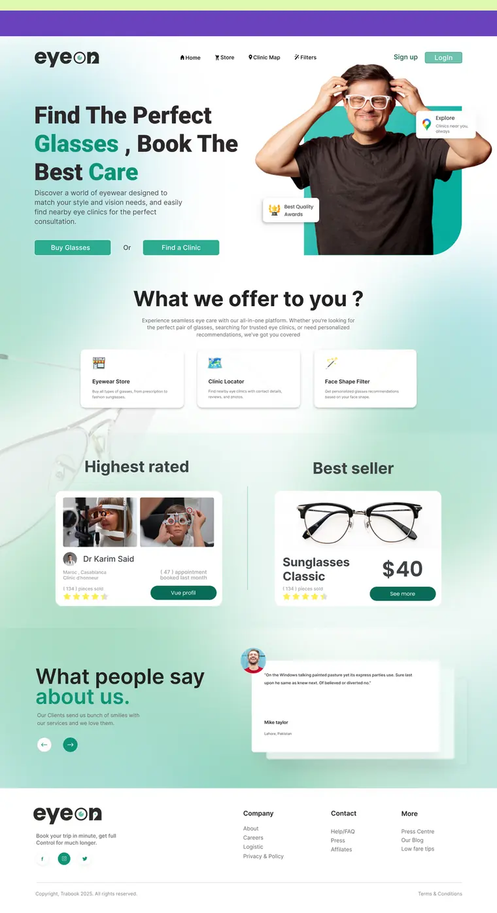
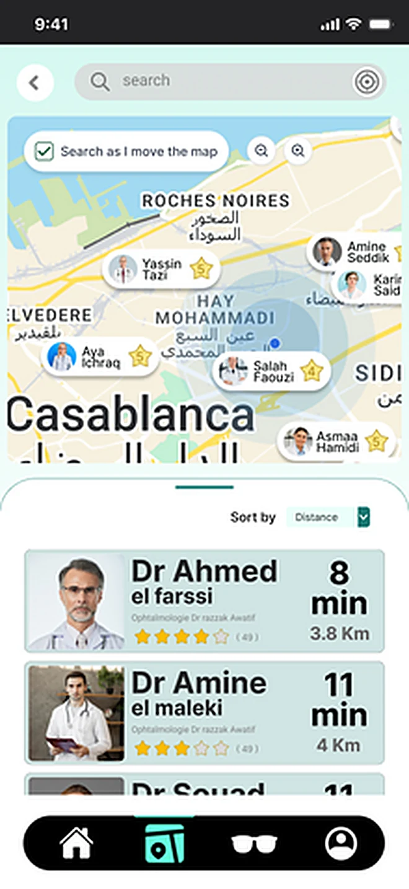
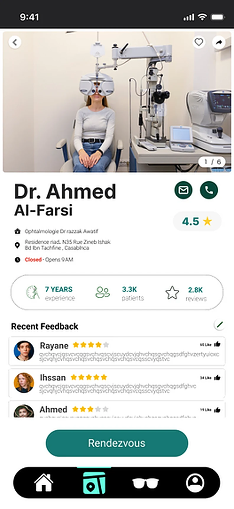
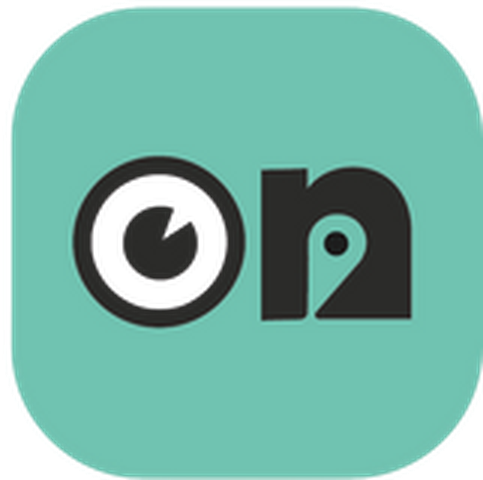
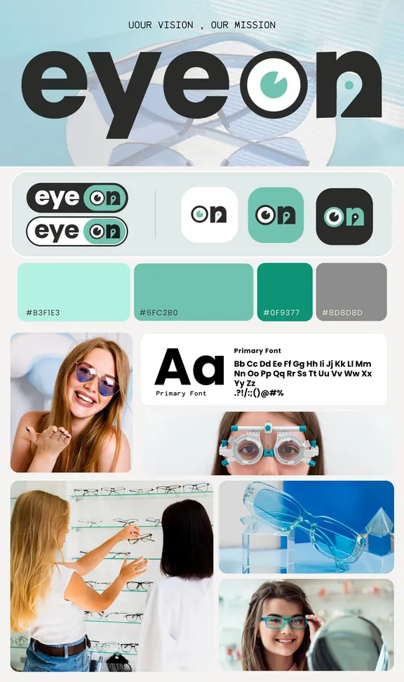
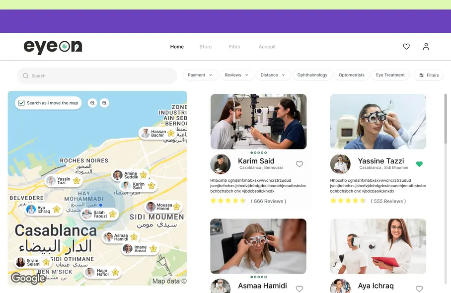
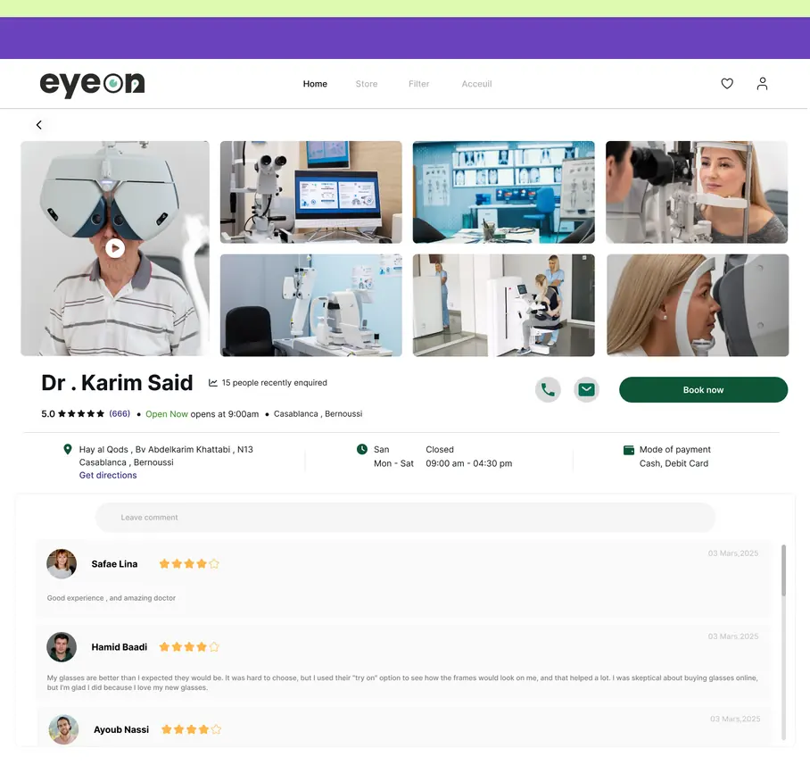
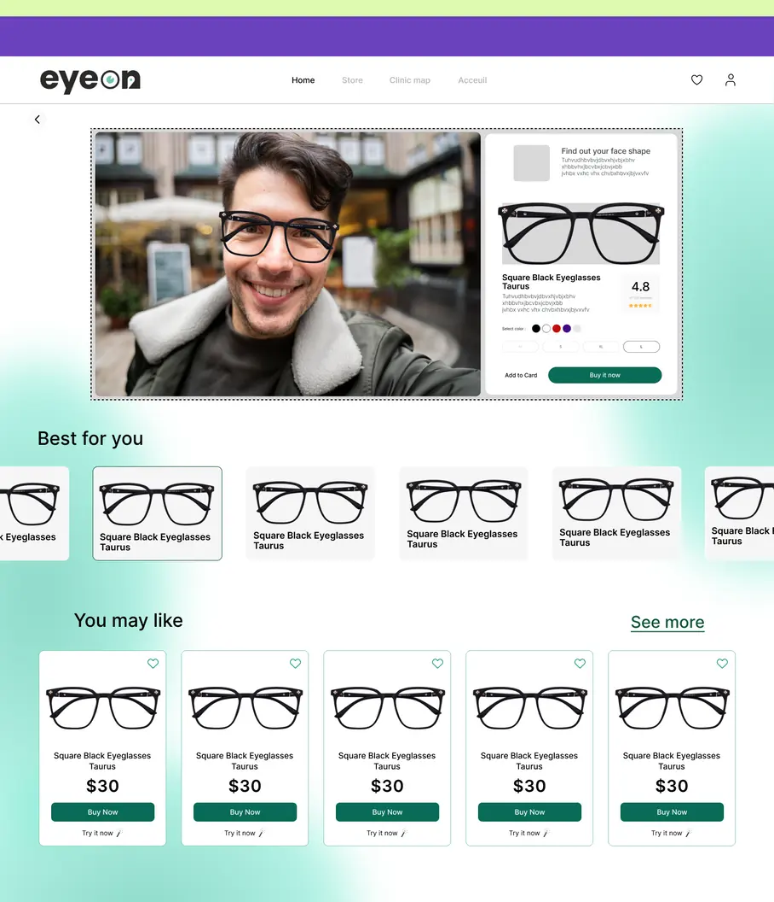

Une app et un site qui réunissent l'achat d'une monture et la prise de rendez-vous chez un opticien — deux parcours aujourd'hui séparés.
Essai virtuel de la monture
Recommandation par forme du visage
Carte des cabinets d'optique
Avis, horaires et disponibilités
Prise de rendez-vous en 3 taps
Personnalisation forme · couleur · taille



AREssai virtuel
★4,8 / 5Dr Ahmed el Farssi
↗8 min · 3,8 kmCabinet le plus proche
7Étapes Design Thinking
8Écrans conçus
3Méthodes de recherche
5Personnes dans l'équipe
2Plateformes
01 — Introduction
Le point de départ
Le brief initial tenait en une ligne : « une plateforme dédiée à l'ophtalmologie ». Ni utilisateur identifié, ni périmètre. Tout le travail a consisté à le réduire à deux parcours défendables, puis à les dessiner.
01
Contexte
L'achat de lunettes en ligne progresse, mais reste une décision qu'on n'aime pas prendre sans essayer. Trouver un cabinet ouvert et bien noté relève encore du bouche-à-oreille.
02
Objectif
Réduire le nombre d'étapes entre « je cherche des lunettes » et « j'ai un rendez-vous », sans faire sortir l'utilisateur du produit.
03
Ce que couvre l'étude
Recherche utilisateur, cadrage, idéation, prototype web et mobile, système visuel, et le plan de mesure prévu pour la mise en ligne.
02 — Rôle
Mes responsabilités
Responsable de chaque étape du processus de design, avec l'appui des porteurs du projet et des développeurs.
01
Recherche & cadrage
Entretiens, questionnaire, analyse concurrentielle, puis synthèse en irritants classés et en une opportunité produit.
02
Architecture & parcours
Arborescence, user flow des deux parcours (achat / rendez-vous), et story map avant tout dessin d'écran.
03
UI & système visuel
Wireframes puis UI des écrans web et mobile, palette, échelle typographique et composants réutilisables.
04
Prototype & mesure
Prototype cliquable pour tester le parcours complet, et définition des indicateurs à suivre au lancement.
03 — Déroulé
Timeline & processus de design
Cinq phases sur douze semaines. Chaque phase se termine par un livrable qui conditionne la suivante.
S1S2S3S4S5S6S7S8S9S10S11S12
1. Immersion
2. Analyse
3. Idéation
4. Prototype
5. Test & itération
Immersion
Entretiens utilisateurs
Questionnaire
Observation concurrentielle
Analyse
Irritants classés
Persona
Matrice des exigences
Idéation
Brainstorming
Carte mentale
Matrice impact-effort
User flow
Prototype
Wireframes
Système visuel
UI web & mobile
Prototype cliquable
Test & itération
Test d'utilisabilité
Corrections
Plan de mesure
04 — Utilisateurs
Personas
Salma, 29 ans
Chargée de clientèle · Casablanca
But
Renouveler ses lunettes sans y passer un samedi entier.
Frein
Ne se fie pas aux photos produit et ignore quelle forme lui va.
Usage
Mobile, le soir, entre deux tâches.
Youssef, 41 ans
Père de famille · Rabat
But
Trouver rapidement un cabinet ouvert près de chez lui.
Frein
Appelle au hasard, sans connaître horaires ni délai d'attente.
Usage
Mobile, en déplacement, souvent dans l'urgence.
05 — Cadrage
Problème
Ce que la recherche a fait remonter, par ordre de fréquence.
Les boutiques en ligne sont complexes et difficiles à utiliser
Choisir une monture adaptée à sa morphologie reste un blocage
La bonne taille est invisible avant réception du produit
On ne sait pas où trouver les cabinets d'optique proches
Aucune visibilité sur les horaires et le temps d'attente
Achat et rendez-vous vivent dans deux endroits séparés
Solution
Six réponses de design, retenues après tri impact / effort.
Essai virtuel en réalité augmentée avant l'achat
Recommandation de monture par analyse de la forme du visage
Taille traitée comme information de premier plan, pas comme variante
Carte interactive des cabinets avec avis, notes et photos
Horaires, distance et temps de trajet affichés avant la note
Réservation intégrée, sans quitter le produit
06 — Système visuel
Identité
Logotype principal
Négatif
Sur couleur
Lockups secondaires
Icône d'application
Clair
Sombre

Mint
Zone de protection
xx
Marge minimale égale à la hauteur du « o » de l'œil, sur les quatre côtés.
Taille minimale
120 px · web
72 px · mobile
En dessous de 72 px, utiliser l'icône seule plutôt que le logotype complet.
À éviter
Déformer ou étirer le logotype
Recolorer l'œil hors palette
Poser le logotype sombre sur fond vert plein
Ajouter contour, ombre portée ou dégradé
Palette
Mint#B3F1E3
Sea#6FC2B0
Green#0F9377
Grey#8D8D8D
Composants récurrents
Bouton pleinBouton contourCarte praticienCarte produitFiltre piluleNotation étoilesRepère de carteBarre de navigationChamp de recherche
Typographie
Aa
Aa Bb Cc Dd Ee Ff Gg Hh Ii Jj Kk Ll Mm Nn Oo Pp Qq Rr Ss Tt Uu Vv Ww Xx Yy Zz 0 1 2 3 4 5 6 7 8 9 . ? ! / : ; ( ) @ # %
Sans-serif géométrique · graisses 300 → 800
Titre 40/700Trouvez la bonne monture
Section 20/600Cabinets près de vous
Corps 16/300Horaires, avis et prise de rendez-vous.
Étiquette 12/600OUVERT · 8 MIN
Planche d'origine

07 — Prototype
Les écrans
Chaque écran répond à un irritant identifié en recherche — pas à une envie de fonctionnalité.
AccueilLes deux entrées — acheter, consulter — visibles avant tout catalogue.

Carte des cabinetsCarte et liste ensemble, filtres au-dessus.

Fiche cabinetHoraires, avis, paiement : réserver sans appeler.

Essai virtuelLa caméra occupe la zone principale, les montures défilent dessous.
Fiche montureLa taille passe en information de premier plan.
07b — Application mobile
L'app, de près
Sur mobile, l'utilisateur est en déplacement : chaque écran est réduit à une décision unique.
Écran 07
Carte des cabinets
Trouver le cabinet le plus proche, en marchant.
Recherche relancée au déplacementLa liste suit la carte, sans bouton « rechercher ici » à trouver.
Temps de trajet avant la note« 8 min · 3,8 km » arrive avant les étoiles : en mobilité, la proximité décide.
Repères photo des praticiensLe visage sert de repère visuel plus vite qu'un nom.
Tri par distance par défautLe tri s'ouvre déjà sur « Distance » — le critère que la recherche a fait remonter en premier.
Détail — la ligne praticien : nom, note, temps de trajet, distance.
Écran 08
Profil praticien
Réserver en trois taps depuis la carte.
Un seul bouton plein« Rendez-vous » est la seule action pleine de l'écran ; tout le reste est secondaire.
Preuve avant promesseAnnées d'exercice, patients suivis et avis récents sont posés au-dessus du bouton.
Appel et messagerie en secondaireLes contacts directs restent accessibles sans concurrencer la réservation.
Statut d'ouverture en rouge« Closed · Opens 9 AM » est traité comme une alerte, pas comme une ligne d'information.
Détail — le bouton de réservation, en bas de l'écran, toujours atteignable au pouce.
08 — Décisions
Irritant → réponse de design
#Ce que disent les utilisateursCe que fait le produit
01« Les sites sont trop compliqués. »Deux entrées seulement sur l'accueil, filtres nommés dans la langue de l'utilisateur.
02« Je ne sais pas ce que ça donne sur moi. »Essai virtuel en plein écran, recommandation par forme du visage sous la caméra.
03« Je me trompe toujours de taille. »Taille affichée au même niveau que le prix, avant l'ajout au panier.
04« Je ne sais pas où sont les cabinets. »Carte et liste côte à côte, recherche relancée au déplacement de la carte.
05« Je n'ai pas le temps d'attendre. »Distance, temps de trajet et horaires affichés avant la note et les avis.
09 — Mesure
Comment on saura que ça marche
Le produit n'a pas encore été mis en ligne : ces quatre indicateurs sont le plan de mesure prévu, pas des résultats. Aucun chiffre n'est avancé tant qu'il n'est pas mesuré.
Rendez-vous pris depuis la carte
Est-ce que les deux parcours se rejoignent vraiment ?
À mesurer
Abandons sur la fiche produit
Est-ce que le doute sur la taille persiste ?
À mesurer
Essais virtuels par session
La fonction est-elle trouvée, et pas seulement livrée ?